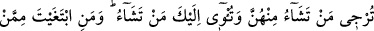

Bir rivâyette Hz. Peygamber (s.a.)’in nişanlandığı kadınların sayısı yirmi üçtür.
Onlardan gerdeğe girdiği hanımlar on ikidir.
Ebü’l-Leys Bostân’da şöyle demiştir: “Hz. Peygamber (s.a.)’in evlendiği hanımları
on dörttür: Bunlar Hz. Hatice, Sevde, Âişe, Hafsa, Ümmü Seleme, Ümmü Habîbe,
Cüveyriyye, Safiyye, Zeyneb bint Cahş, Meymûne, Zeyneb bint Huzeyme, sonra
Hilaloğulları’ndan kendisini Hz. Peygamber (s.a.)’e hîbe eden bir kadın, sonra Kinde
kabilesinden Hz. Peygamber (s.a.)’den sakınıp geri duran, Hz. Peygamber (s.a.)’in de
boşadığı bir kadın, sonra Küleyboğulları’ndan bir kadın.
İnsânü’l-uyûn’da der ki: “Açıktır ki Hz. Peygamber (s.a.)’in kendileriyle gerdeğe
girdiği hanımları on iki tanedir. Bunlar evlenme sırasıyla Hatice, Sevde, Âişe, Hafsa,
Zeyneb bint Huzeyme, Ümmü Seleme, Zeyneb bint Cahş, Cüveyriyye, Reyhâne,
Ümmü Habîbe, Safiyye ve Meymûne’dir.
Hz. Peygamber (s.a.)’in kendisiyle gerdeğe girmediği hanımlarından biri de Hz.
Peygamber (a.s.)’ın kendisini nikâhladığını duyunca sevinçten vefat eden Dihyetü’l-
Kelbî’nin kız kardeşi Garrâ’dır.
Yine o kadınlardan birisi de Kureyş’ten Sevde’dir. Hz. Peygamber (a.s.) kendisine
evlilik teklifi yapınca, beş veya altı oğlu olduğunu ileri sürerek özür beyan etmiştir. Hz.
Peygamber (s.a.) onun hakkında hayır duâda bulunmuştur.
Yine o kadınlardan birisi Hz. Peygamber (s.a.)’den Allâh’a sığınan Esmâ bint Muâz
el-Kindiyye’dir. Kadınlar ona: “Hz. Peygamber (s.a.)’in nezdinde bir mevki elde etmek
istersen ondan Allâh’a sığın.” dediler. Rasûlullah (s.a.) onunla gerdeğe girince:
“Senden Allâh’a sığınırım.” Esmâ, bu sözün edebden olduğunu zannetti. Hz. Peygamber
(a.s.) da: “Sen yüce bir sığınağa sığındın, ailene dön.”[258] buyurdu ve ona hediye
olarak üç elbise verdi.
Yine bu kadınlardan birisi, (Hz. Peygamber (s.a.)’in hanımlarını dünyâyı veya Allah
ve Rasûlü’nü tercih arasında muhayyer bırakan) tahyîr âyeti (el-Ahzâb, 33/28-29)
inince dünyâyı tercih eden Fâtıma bint Dıhk’tir. O: “Ben ne bedbahtım ki dünyâyı
tercih ettim.” derdi.
Bu kadınlardan birisi de Kuteyle’dir. O Hadramut’ta iken kardeşi onu Hz. Peygamber
(s.a.)’e nikâhladı. Kuteyle yanına gelmeden Hz. Peygamber (s.a.) vefat etti. Kuteyle’nin
muhayyer bırakılmasını, isterse üzerine hicab atılıp mü’minlerin annelerinden olmasını,
ayrılmak isterse dilediği kimse ile evlenmesini tavsiye buyurdu. Kuteyle ayrılmayı
tercih etti. İkrime b. Ebî Cehil Hadramut’ta onunla evlendi.
Bir hadîste şöyle buyrulmuştur: “Cibrîl (a.s.) Rabbimden bana bir vahiy getirmeden
hanımlarımdan hiçbiriyle evlenmedim, kızlarımdan da hiçbirini evlendirmedim.”[259]